Integrate and cluster Macrophage cells
Jovana Maksimovic and George Howitt
April 27, 2024
Last updated: 2024-04-27
Checks: 7 0
Knit directory: paed-inflammation-CITEseq/
This reproducible R Markdown analysis was created with workflowr (version 1.7.1). The Checks tab describes the reproducibility checks that were applied when the results were created. The Past versions tab lists the development history.
Great! Since the R Markdown file has been committed to the Git repository, you know the exact version of the code that produced these results.
Great job! The global environment was empty. Objects defined in the global environment can affect the analysis in your R Markdown file in unknown ways. For reproduciblity it’s best to always run the code in an empty environment.
The command set.seed(20240216) was run prior to running
the code in the R Markdown file. Setting a seed ensures that any results
that rely on randomness, e.g. subsampling or permutations, are
reproducible.
Great job! Recording the operating system, R version, and package versions is critical for reproducibility.
Nice! There were no cached chunks for this analysis, so you can be confident that you successfully produced the results during this run.
Great job! Using relative paths to the files within your workflowr project makes it easier to run your code on other machines.
Great! You are using Git for version control. Tracking code development and connecting the code version to the results is critical for reproducibility.
The results in this page were generated with repository version 2c5e5ac. See the Past versions tab to see a history of the changes made to the R Markdown and HTML files.
Note that you need to be careful to ensure that all relevant files for
the analysis have been committed to Git prior to generating the results
(you can use wflow_publish or
wflow_git_commit). workflowr only checks the R Markdown
file, but you know if there are other scripts or data files that it
depends on. Below is the status of the Git repository when the results
were generated:
Ignored files:
Ignored: .Rhistory
Ignored: .Rproj.user/
Ignored: data/C133_Neeland_batch1/
Ignored: data/C133_Neeland_merged/
Ignored: renv/library/
Ignored: renv/staging/
Untracked files:
Untracked: output/cluster_markers/ADT_decontx/macrophages/
Untracked: output/cluster_markers/RNA_decontx/macrophages/
Unstaged changes:
Modified: analysis/09.0_integrate_cluster_macro_cells.Rmd
Note that any generated files, e.g. HTML, png, CSS, etc., are not included in this status report because it is ok for generated content to have uncommitted changes.
These are the previous versions of the repository in which changes were
made to the R Markdown
(analysis/09.1_integrate_cluster_macro_cells_decontx.Rmd)
and HTML
(docs/09.1_integrate_cluster_macro_cells_decontx.html)
files. If you’ve configured a remote Git repository (see
?wflow_git_remote), click on the hyperlinks in the table
below to view the files as they were in that past version.
| File | Version | Author | Date | Message |
|---|---|---|---|---|
| Rmd | 2c5e5ac | Jovana Maksimovic | 2024-04-27 | wflow_publish(c("analysis/index.Rmd", "analysis/09.1_integrate_cluster_macro_cells_decontx.Rmd")) |
| Rmd | 6e1f449 | Jovana Maksimovic | 2024-03-20 | Created notebooks for macrophage integration and clustering. |
Load libraries.
suppressPackageStartupMessages({
library(SingleCellExperiment)
library(edgeR)
library(tidyverse)
library(ggplot2)
library(Seurat)
library(glmGamPoi)
library(dittoSeq)
library(here)
library(clustree)
library(patchwork)
library(AnnotationDbi)
library(org.Hs.eg.db)
library(glue)
library(speckle)
library(tidyHeatmap)
library(dsb)
})Load data
Load T-cell subset Seurat object.
ambient <- "_decontx"
seu <- readRDS(here("data",
"C133_Neeland_merged",
glue("C133_Neeland_full_clean{ambient}_macrophages.SEU.rds")))
seuAn object of class Seurat
20299 features across 151349 samples within 3 assays
Active assay: RNA (19973 features, 0 variable features)
2 other assays present: ADT, ADT.dsbData integration
Visualise batch effects.
seu <- ScaleData(seu) %>%
FindVariableFeatures() %>%
RunPCA(dims = 1:30, verbose = FALSE) %>%
RunUMAP(dims = 1:30, verbose = FALSE)
DimPlot(seu, group.by = "Batch", reduction = "umap")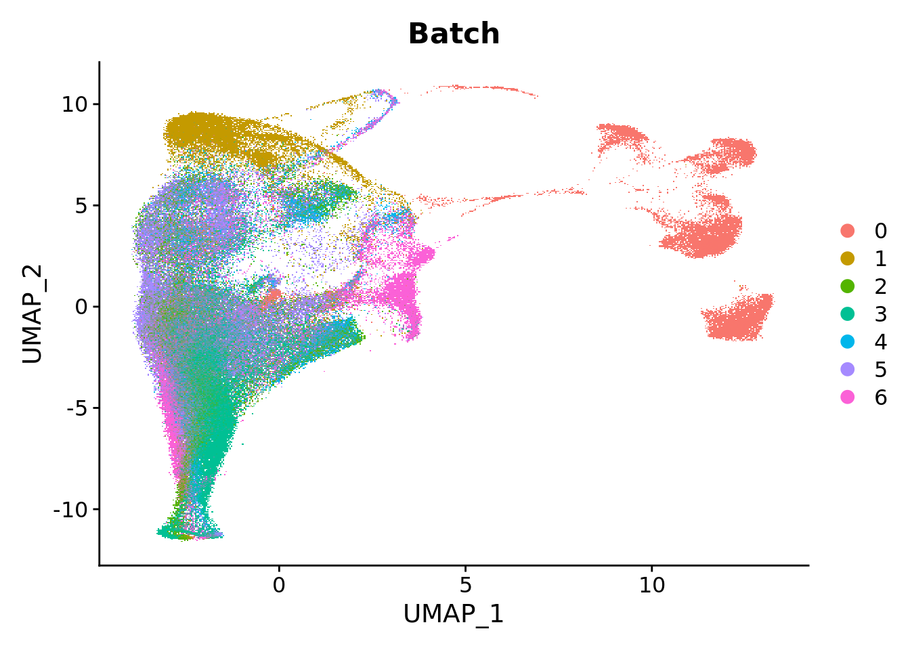
DimPlot(seu, group.by = "predicted.ann_level_4", reduction = "umap")
Examine cell library sizes after ambient removal per sample and per cell type. Some cells have very low library sizes after ambient removal.
VlnPlot(seu, features = "nCount_RNA", group.by = "sample.id", log = TRUE, pt.size = 0) +
NoLegend() +
geom_hline(yintercept = 250) +
theme(axis.text = element_text(size = 10))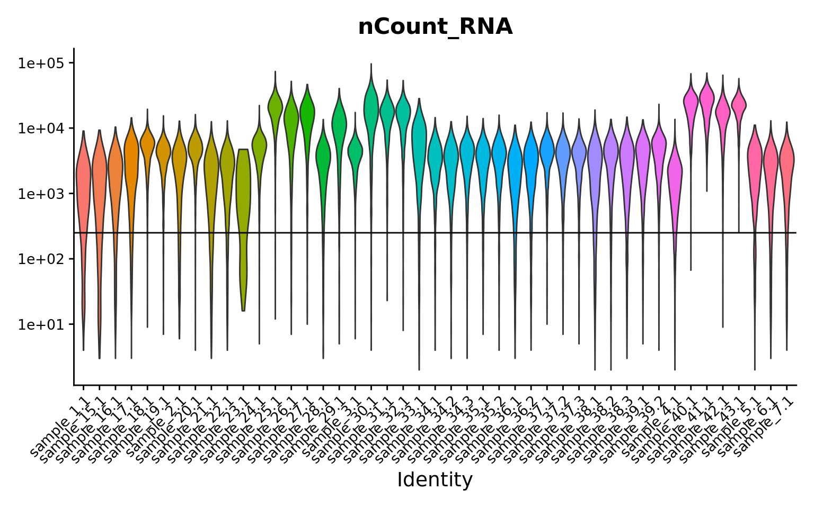
VlnPlot(seu, features = "nCount_RNA", group.by = "predicted.ann_level_4", log = TRUE, pt.size = 0) +
NoLegend() +
geom_hline(yintercept = 250) +
theme(axis.text = element_text(size = 10))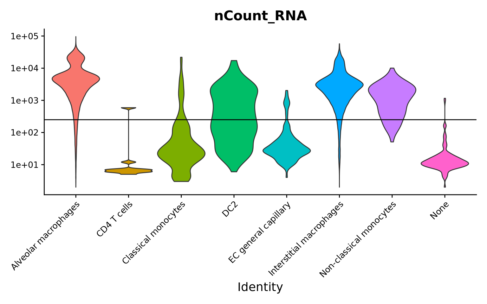
Filter our low library size cells and redo UMAP.
# remove low library size cells
seu <- subset(seu, cells = which(seu$nCount_RNA > 250))
seu <- ScaleData(seu) %>%
FindVariableFeatures() %>%
RunPCA(dims = 1:30, verbose = FALSE) %>%
RunUMAP(dims = 1:30, verbose = FALSE)
DimPlot(seu, group.by = "Batch", reduction = "umap")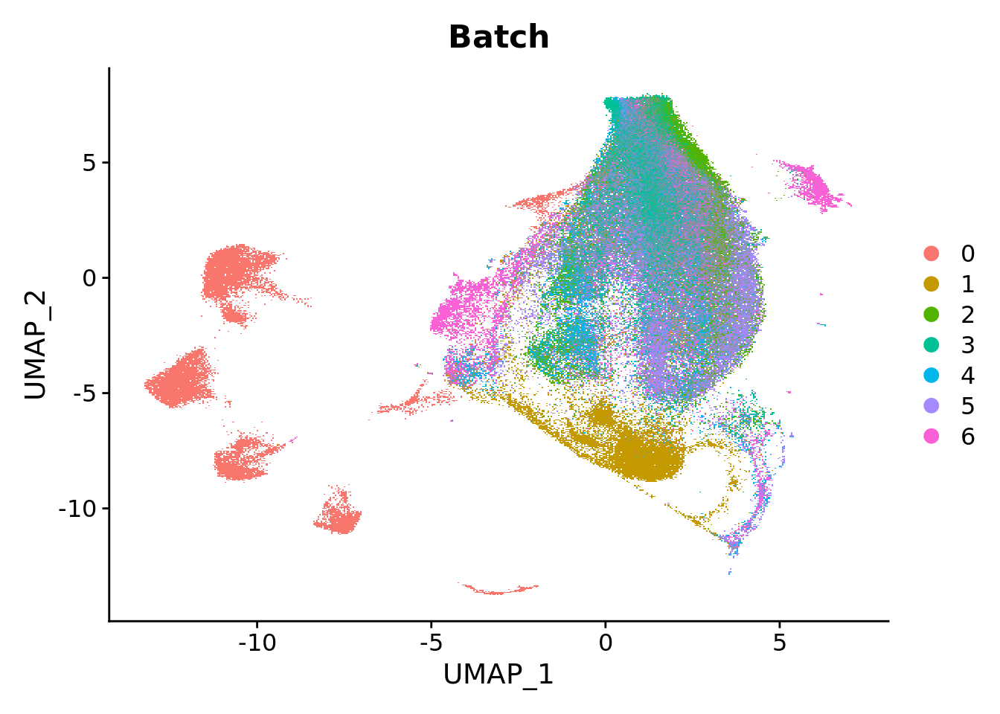
Cell cycle effect
Assign each cell a score, based on its expression of G2/M and S phase markers as described in the Seurat workflow here.
s.genes <- cc.genes.updated.2019$s.genes
g2m.genes <- cc.genes.updated.2019$g2m.genes
seu <- CellCycleScoring(seu, s.features = s.genes, g2m.features = g2m.genes,
set.ident = TRUE)PCA of cell cycle genes.
DimPlot(seu, group.by = "Phase") -> p1
seu %>%
RunPCA(features = c(s.genes, g2m.genes),
dims = 1:30, verbose = FALSE) %>%
DimPlot(reduction = "pca") -> p2
(p2 / p1) + plot_layout(guides = "collect")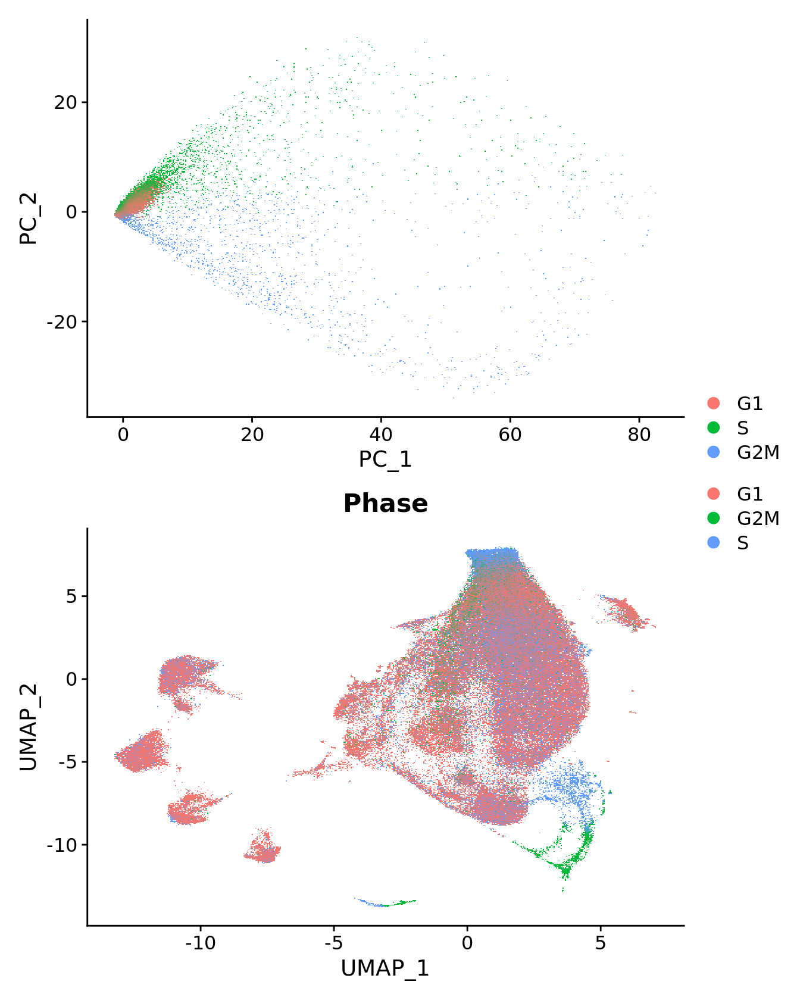
Distribution of cell cycle markers.
# Visualize the distribution of cell cycle markers across
RidgePlot(seu, features = c("PCNA", "TOP2A", "MCM6", "MKI67"), ncol = 2,
log = TRUE)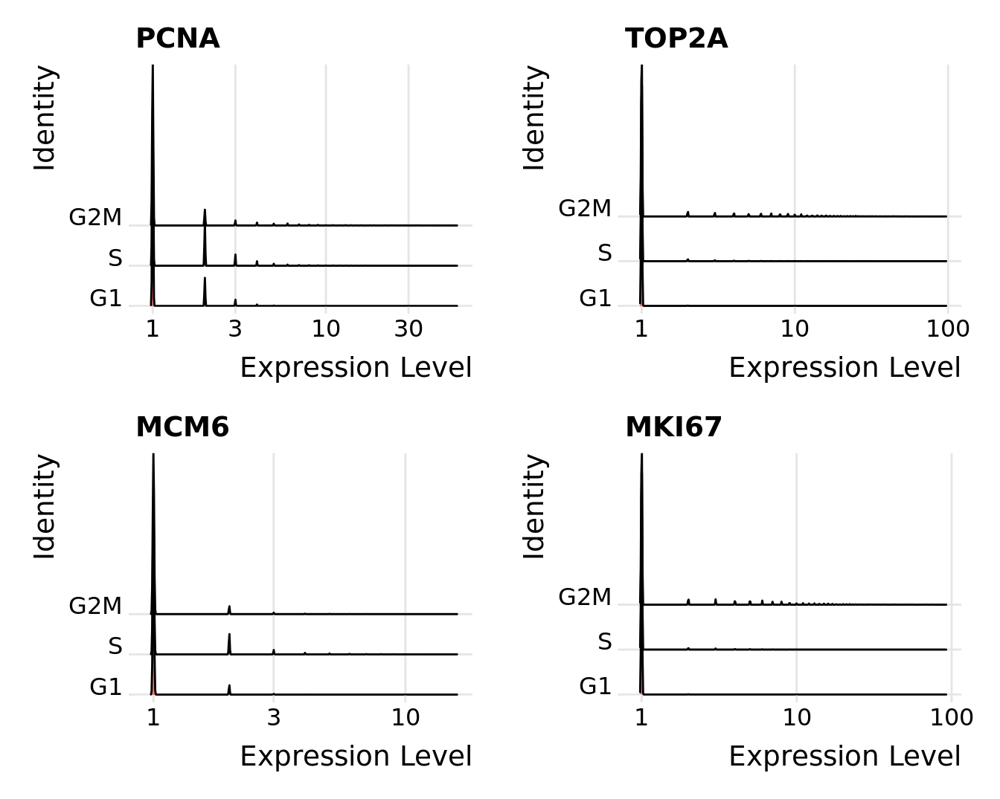
Using the Seurat Alternate Workflow from here,
calculate the difference between the G2M and S phase scores so that
signals separating non-cycling cells and cycling cells will be
maintained, but differences in cell cycle phase among proliferating
cells (which are often uninteresting), can be regressed out of the
data.
seu$CC.Difference <- seu$S.Score - seu$G2M.ScoreIntegrate RNA data
Split by batch for integration. Normalise with
SCTransform.
First, integrate the RNA data.
out <- here("data",
"C133_Neeland_merged",
glue("C133_Neeland_full_clean{ambient}_integrated_macrophages.SEU.rds"))
if(!file.exists(out)){
DefaultAssay(seu) <- "RNA"
VariableFeatures(seu) <- NULL
seu[["pca"]] <- NULL
seu[["umap"]] <- NULL
seuLst <- SplitObject(seu, split.by = "Batch")
rm(seu)
gc()
# normalise with SCTransform and regress out cell cycle score difference
seuLst <- lapply(X = seuLst, FUN = SCTransform, method = "glmGamPoi",
vars.to.regress = "CC.Difference")
# integrate RNA data
features <- SelectIntegrationFeatures(object.list = seuLst,
nfeatures = 3000)
seuLst <- PrepSCTIntegration(object.list = seuLst, anchor.features = features)
seuLst <- lapply(X = seuLst, FUN = RunPCA, features = features)
anchors <- FindIntegrationAnchors(object.list = seuLst,
normalization.method = "SCT",
anchor.features = features,
#k.anchor = 20,
dims = 1:30, reduction = "rpca")
seu <- IntegrateData(anchorset = anchors,
#k.weight = min(100, min(sapply(seuLst, ncol)) - 5),
normalization.method = "SCT",
dims = 1:30)
DefaultAssay(seu) <- "integrated"
seu <- RunPCA(seu, dims = 1:30, verbose = FALSE) %>%
RunUMAP(dims = 1:30, verbose = FALSE)
saveRDS(seu, file = out)
fs::file_chmod(out, "664")
if(any(str_detect(fs::group_ids()$group_name,
"oshlack_lab"))) fs::file_chown(out,
group_id = "oshlack_lab")
} else {
seu <- readRDS(file = out)
}Integrate ADT data
out <- here("data",
"C133_Neeland_merged",
glue("C133_Neeland_full_clean{ambient}_integrated_macrophages.ADT.SEU.rds"))
# get ADT meta data
read.csv(file = here("data",
"C133_Neeland_batch1",
"data",
"sample_sheets",
"ADT_features.csv")) -> adt_data
# cleanup ADT meta data
pattern <- "anti-human/mouse |anti-human/mouse/rat |anti-mouse/human "
adt_data$name <- gsub(pattern, "", adt_data$name)
# change ADT rownames to antibody names
DefaultAssay(seu) <- "ADT"
if(all(rownames(seu[["ADT"]]@counts) == adt_data$id)){
adt_counts <- seu[["ADT"]]@counts
rownames(adt_counts) <- adt_data$name
seu[["ADT"]] <- CreateAssayObject(counts = adt_counts)
}
if(!file.exists(out)){
tmp <- DietSeurat(subset(seu, cells = which(seu$Batch != 0)),
assays = "ADT")
DefaultAssay(tmp) <- "ADT"
seuLst <- SplitObject(tmp, split.by = "Batch")
seuLst <- lapply(X = seuLst, FUN = function(x) {
# set all ADT as variable features
VariableFeatures(x) <- rownames(x)
x <- NormalizeData(x, normalization.method = "CLR", margin = 2)
x
})
features <- SelectIntegrationFeatures(object.list = seuLst)
seuLst <- lapply(X = seuLst, FUN = function(x) {
x <- ScaleData(x, features = features, verbose = FALSE) %>%
RunPCA(features = features, verbose = FALSE)
x
})
anchors <- FindIntegrationAnchors(object.list = seuLst, reduction = "rpca",
dims = 1:30)
tmp <- IntegrateData(anchorset = anchors, dims = 1:30)
DefaultAssay(tmp) <- "integrated"
tmp <- ScaleData(tmp) %>%
RunPCA(dims = 1:30, verbose = FALSE) %>%
RunUMAP(dims = 1:30, verbose = FALSE)
# create combined object that only contains cells with RNA+ADT data
seuADT <- subset(seu, cells = which(seu$Batch !=0))
seuADT[["integrated.adt"]] <- tmp[["integrated"]]
seuADT[["pca.adt"]] <- tmp[["pca"]]
seuADT[["umap.adt"]] <- tmp[["umap"]]
saveRDS(seuADT, file = out)
fs::file_chmod(out, "664")
if(any(str_detect(fs::group_ids()$group_name,
"oshlack_lab"))) fs::file_chown(out,
group_id = "oshlack_lab")
} else {
seuADT <- readRDS(file = out)
}View integrated data
DefaultAssay(seuADT) <- "integrated"
DimPlot(seu, group.by = "Batch", reduction = "umap") -> p1
DimPlot(seuADT, group.by = "Batch", reduction = "umap") -> p2
DimPlot(seuADT, group.by = "Batch", reduction = "umap.adt") -> p3
(p1 / ((p2 | p3) +
plot_layout(guides = "collect"))) &
theme(axis.title = element_text(size = 8),
axis.text = element_text(size = 8)) 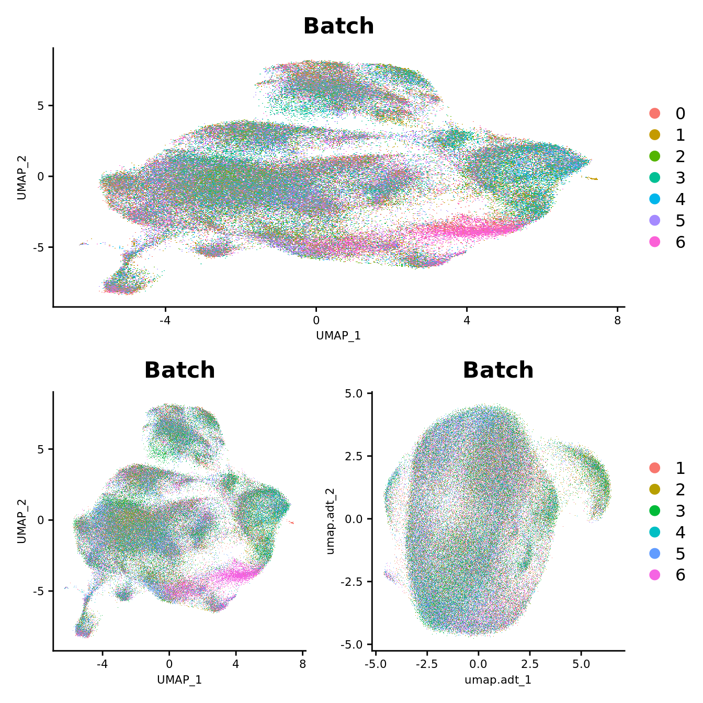
DimPlot(seu, group.by = "Phase", reduction = "umap") -> p1
DimPlot(seuADT, group.by = "Phase", reduction = "umap") -> p2
DimPlot(seuADT, group.by = "Phase", reduction = "umap.adt") -> p3
(p1 / ((p2 | p3) +
plot_layout(guides = "collect"))) &
theme(axis.title = element_text(size = 8),
axis.text = element_text(size = 8)) 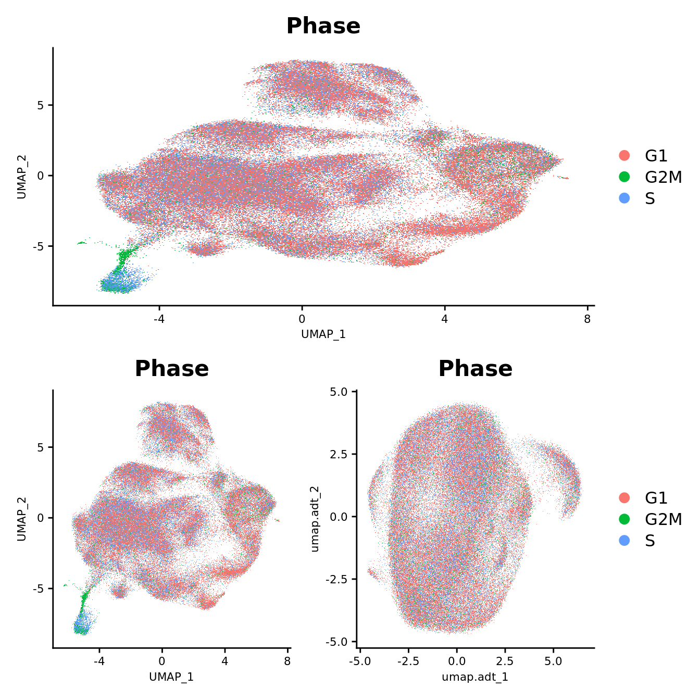
Cluster data
Perform clustering only on data that has ADT i.e. exclude batch 0.
Dimensionality reduction (RNA)
Exclude any mitochondrial, ribosomal, immunoglobulin and HLA genes from variable genes list, to encourage clustering by cell type.
# remove HLA, immunoglobulin, RNA, MT, and RP genes from variable genes list
var_regex = '^HLA-|^IG[HJKL]|^RNA|^MT-|^RP'
hvg <- grep(var_regex, VariableFeatures(seuADT), invert = TRUE, value = TRUE)
# assign edited variable gene list back to object
VariableFeatures(seuADT) <- hvg
# redo PCA and UMAP
seuADT <- RunPCA(seuADT, dims = 1:30, verbose = FALSE) %>%
RunUMAP(dims = 1:30, verbose = FALSE)
DimHeatmap(seuADT, dims = 1:30, cells = 500, balanced = TRUE,
reduction = "pca", assays = "integrated")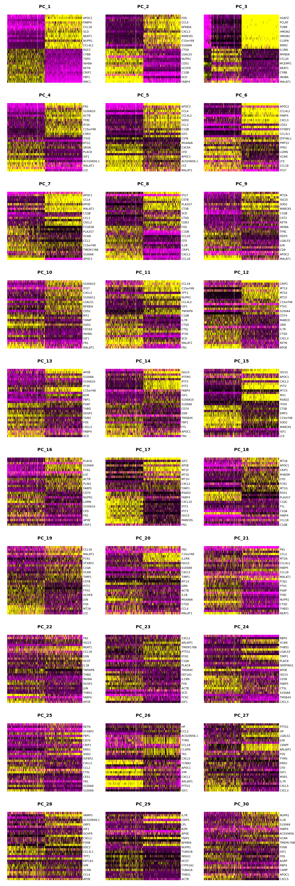
ElbowPlot(seuADT, ndims = 30, reduction = "pca")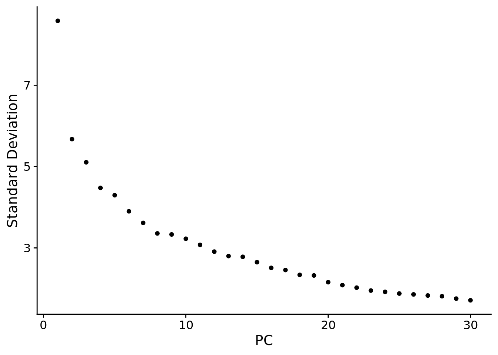
Run clustering
Perform clustering at a range of resolutions and visualise to see which is appropriate to proceed with.
out <- here("data",
"C133_Neeland_merged",
glue("C133_Neeland_full_clean{ambient}_integrated_clustered_macrophages.SEU.rds"))
# if(!file.exists(out)){
# DefaultAssay(seuADT) <- "integrated"
# seuADT <- FindMultiModalNeighbors(seuADT, reduction.list = list("pca", "pca.adt"),
# dims.list = list(1:30, 1:10),
# modality.weight.name = "RNA.weight")
# seuADT <- FindClusters(seuADT, algorithm = 3,
# resolution = seq(0.1, 1, by = 0.1),
# graph.name = "wsnn")
# seuADT <- RunUMAP(seuADT, dims = 1:30, nn.name = "weighted.nn",
# reduction.name = "wnn.umap", reduction.key = "wnnUMAP_",
# return.model = TRUE)
# saveRDS(seuADT, file = out)
# fs::file_chmod(out, "664")
# if(any(str_detect(fs::group_ids()$group_name,
# "oshlack_lab"))) fs::file_chown(out,
# group_id = "oshlack_lab")
#
# } else {
# seuADT <- readRDS(file = out)
#
# }
if(!file.exists(out)){
DefaultAssay(seu) <- "integrated"
seu <- FindNeighbors(seu, reduction = "pca", dims = 1:30)
seu <- FindClusters(seu, algorithm = 3,
resolution = seq(0.1, 1, by = 0.1))
saveRDS(seu, file = out)
fs::file_chmod(out, "664")
fs::file_chown(out, group_id = "oshlack_lab")
} else {
seu <- readRDS(file = out)
}
clustree::clustree(seu, prefix = "integrated_snn_res.")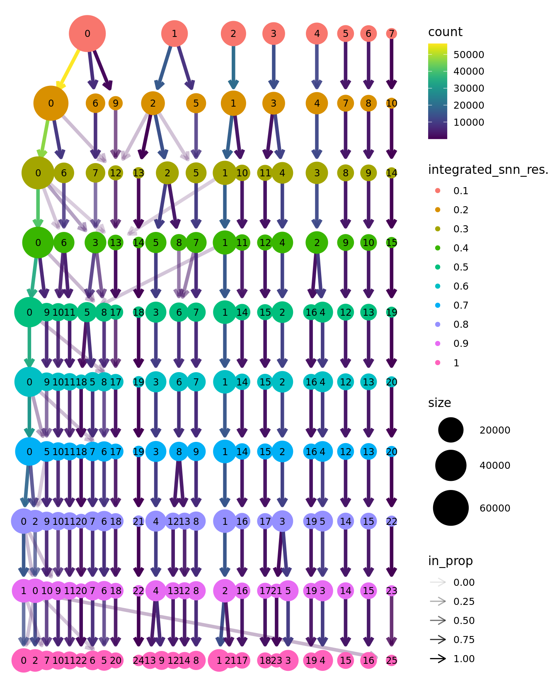
View clusters
Choose most appropriate resolution based on clustree
plot above. Cluster 7 contains mostly cells from healthy samples in
batch 6, which contains the youngest samples. What is different about
this macrophage cluster?
grp <- "integrated_snn_res.0.6"
# change factor ordering
seu@meta.data[,grp] <- fct_inseq(seu@meta.data[,grp])
DimPlot(seu, group.by = grp, label = T) +
NoLegend()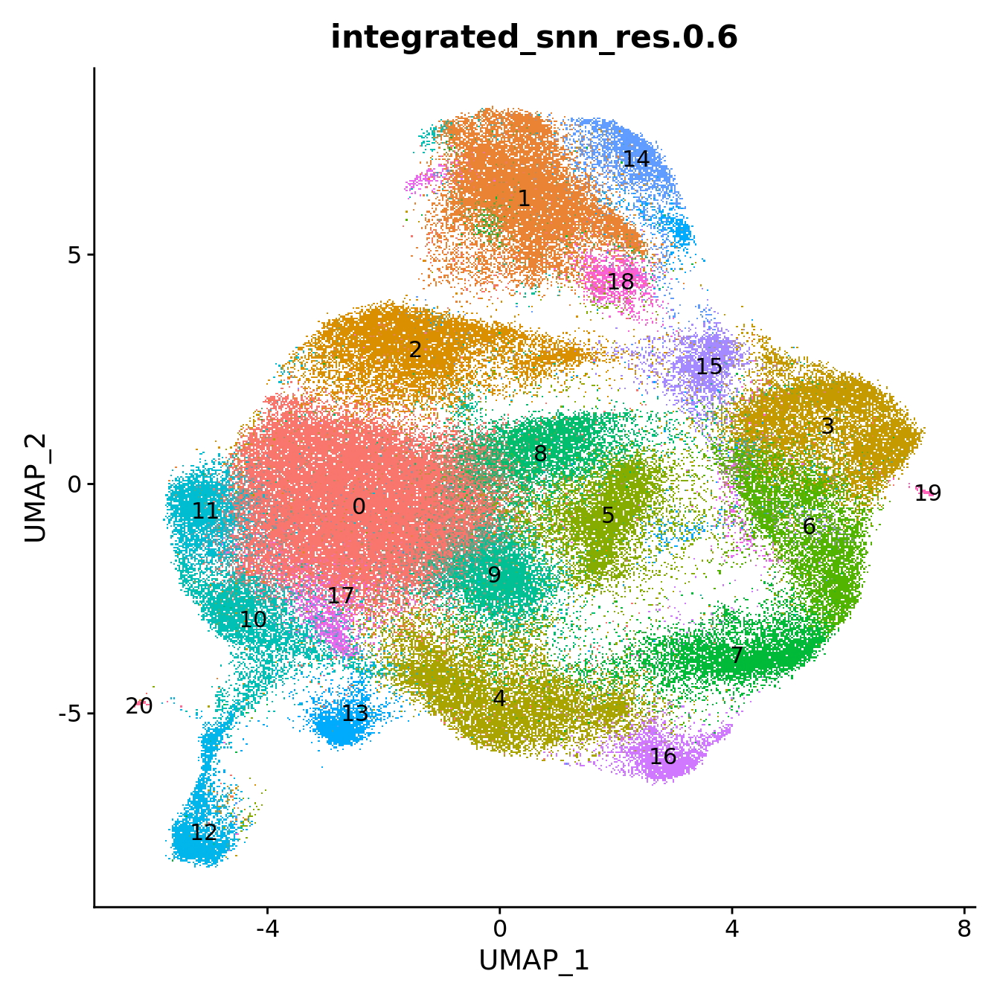
DimPlot(seu, reduction = "umap", group.by = "Phase",
label = FALSE, label.size = 3)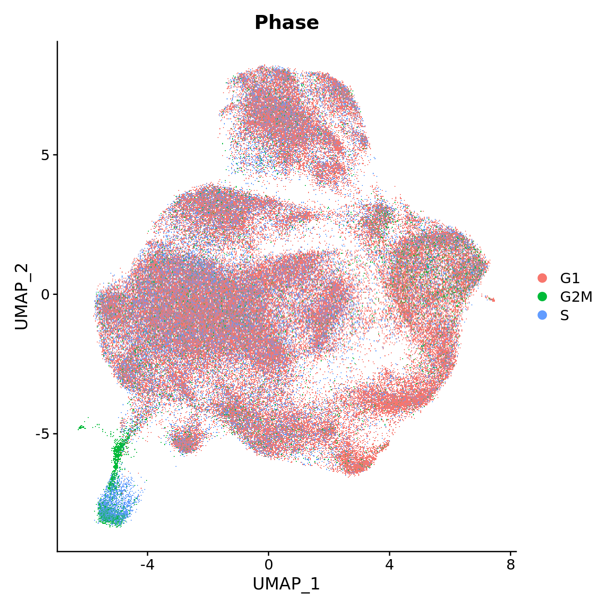
DimPlot(seu, reduction = "umap", group.by = "Disease",
label = FALSE, label.size = 3)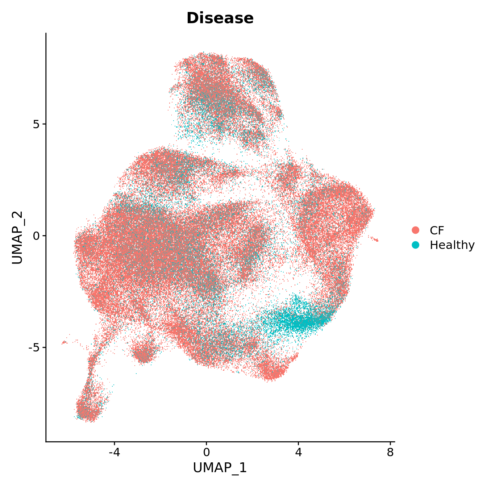
DimPlot(seu, reduction = "umap", group.by = "Batch",
label = FALSE, label.size = 3)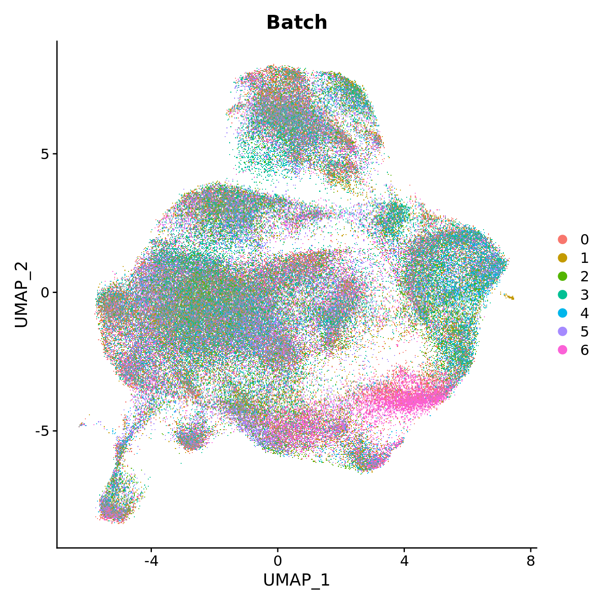
seu$logAge <- log2(seu$Age)
FeaturePlot(seu, reduction = "umap", features = "logAge",
label = FALSE, label.size = 3) +
scale_color_viridis_c(option = "plasma", direction = -1)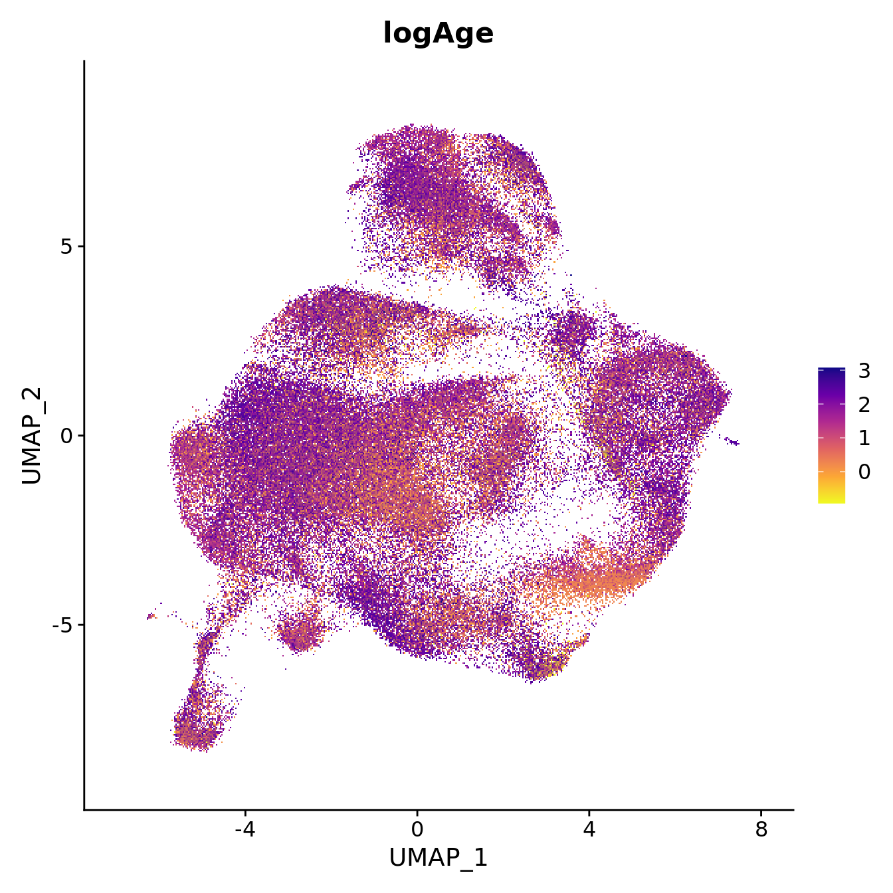
seu$logLibSize <- log2(seu$nCount_RNA)
FeaturePlot(seu, reduction = "umap", features = "logLibSize",
label = FALSE, label.size = 3) +
scale_color_viridis_c(option = "plasma", direction = -1)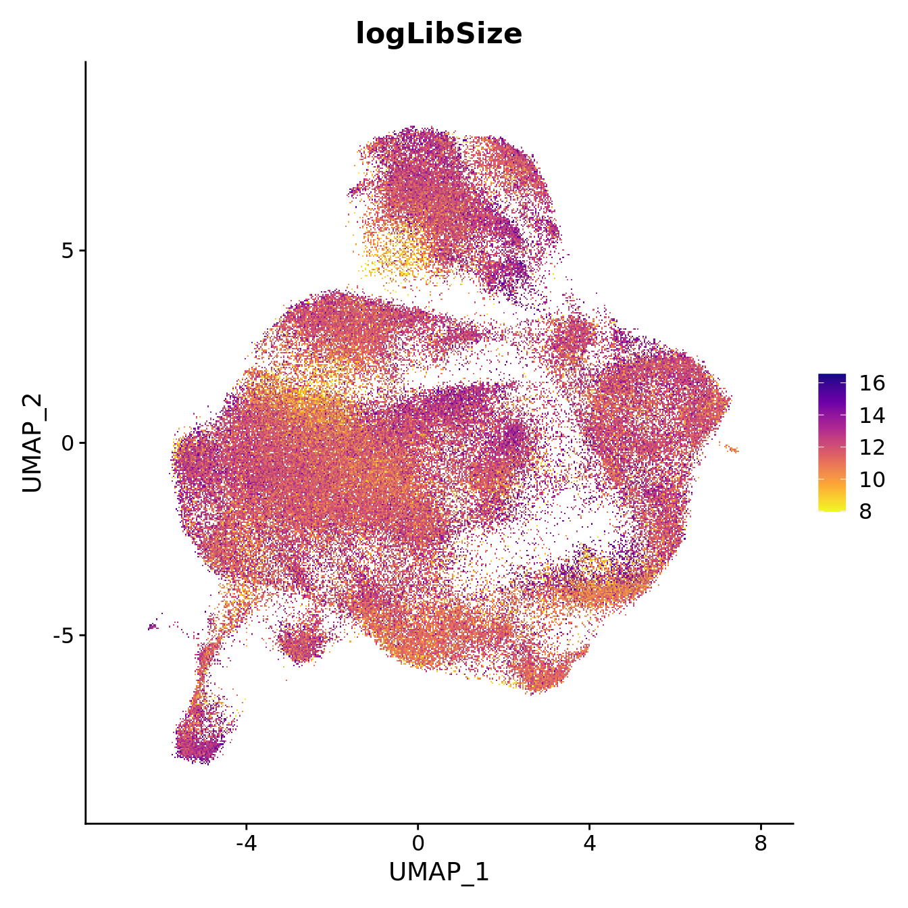
Examine clusters
Number of cells per cluster.
seu@meta.data %>%
ggplot(aes(x = !!sym(grp), fill = !!sym(grp))) +
geom_bar() +
geom_text(aes(label = ..count..), stat = "count",
vjust = -0.5, colour = "black", size = 2) +
theme(axis.text.x = element_text(angle = 90, vjust = 0.5, hjust = 1)) +
NoLegend()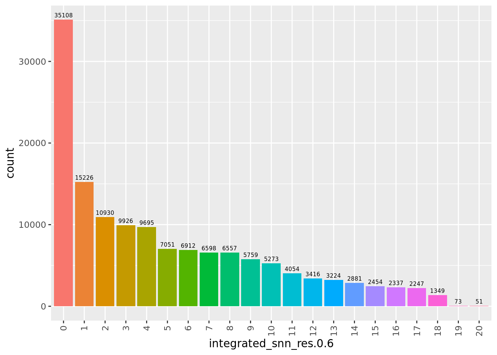
Visualise quality metrics by cluster. Cluster 19 potentially contains low quality cells.
seu@meta.data %>%
ggplot(aes(x = !!sym(grp),
y = nCount_RNA,
fill = !!sym(grp))) +
geom_violin(scale = "area") +
scale_y_log10() +
NoLegend() -> p2
seu@meta.data %>%
ggplot(aes(x = !!sym(grp),
y = nFeature_RNA,
fill = !!sym(grp))) +
geom_violin(scale = "area") +
scale_y_log10() +
NoLegend() -> p3
(p2 / p3) & theme(text = element_text(size = 8))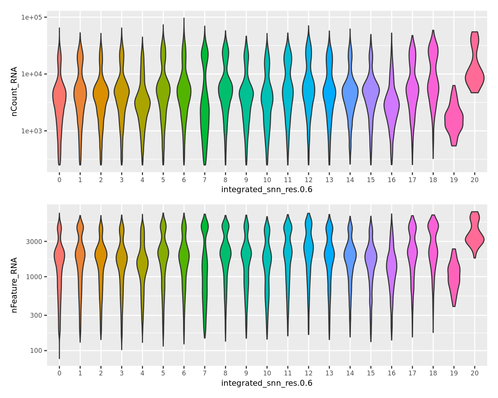
Check the batch composition of each of the clusters. Cluster 17 does not contain any cells from several batches; could be a quality issue?
dittoBarPlot(seu,
var = "Batch",
group.by = grp)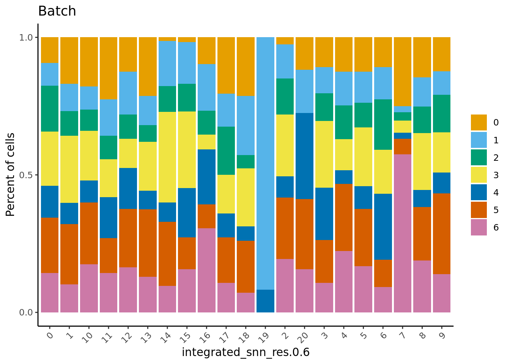
Check the sample compositions of clusters. As expected, clusters 19 and 7 have the fewest samples represented.
dittoBarPlot(seu,
var = "sample.id",
group.by = grp) + ggtitle("Samples") +
theme(legend.position = "bottom")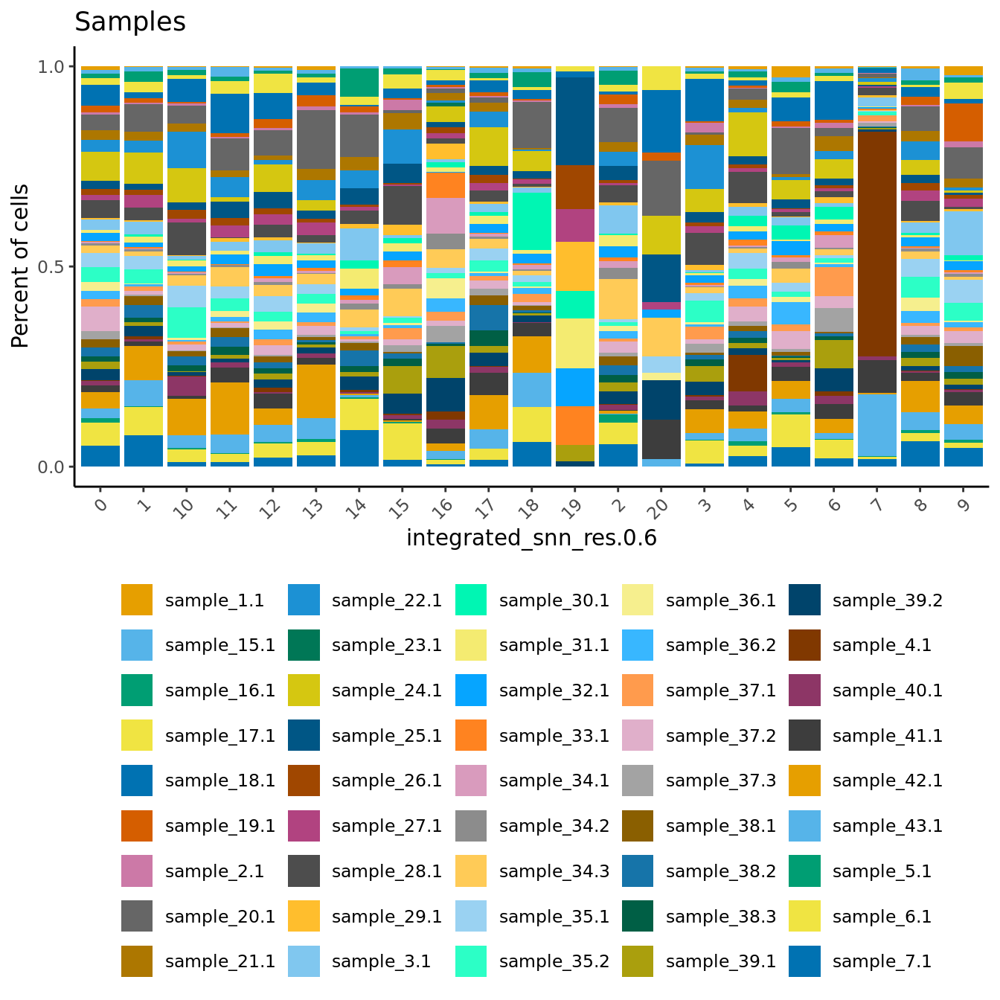
RNA marker gene analysis
Adapted from Dr. Belinda Phipson’s work for [@Sim2021-cg].
Test for marker genes using limma
# limma-trend for DE
Idents(seu) <- grp
logcounts <- normCounts(DGEList(as.matrix(seu[["RNA"]]@counts)),
log = TRUE, prior.count = 0.5)
entrez <- AnnotationDbi::mapIds(org.Hs.eg.db,
keys = rownames(logcounts),
column = c("ENTREZID"),
keytype = "SYMBOL",
multiVals = "first")
# remove genes without entrez IDs as these are difficult to interpret biologically
logcounts <- logcounts[!is.na(entrez),]
# remove confounding genes from counts table e.g. mitochondrial, ribosomal etc.
logcounts <- logcounts[!str_detect(rownames(logcounts), var_regex),]
maxclust <- length(levels(Idents(seu))) - 1
clustgrp <- paste0("c", Idents(seu))
clustgrp <- factor(clustgrp, levels = paste0("c", 0:maxclust))
donor <- factor(seu$sample.id)
batch <- factor(seu$Batch)
design <- model.matrix(~ 0 + clustgrp + donor)
colnames(design)[1:(length(levels(clustgrp)))] <- levels(clustgrp)
# Create contrast matrix
mycont <- matrix(NA, ncol = length(levels(clustgrp)),
nrow = length(levels(clustgrp)))
rownames(mycont) <- colnames(mycont) <- levels(clustgrp)
diag(mycont) <- 1
mycont[upper.tri(mycont)] <- -1/(length(levels(factor(clustgrp))) - 1)
mycont[lower.tri(mycont)] <- -1/(length(levels(factor(clustgrp))) - 1)
# Fill out remaining rows with 0s
zero.rows <- matrix(0, ncol = length(levels(clustgrp)),
nrow = (ncol(design) - length(levels(clustgrp))))
fullcont <- rbind(mycont, zero.rows)
rownames(fullcont) <- colnames(design)
fit <- lmFit(logcounts, design)
fit.cont <- contrasts.fit(fit, contrasts = fullcont)
fit.cont <- eBayes(fit.cont, trend = TRUE, robust = TRUE)
summary(decideTests(fit.cont)) c0 c1 c2 c3 c4 c5 c6 c7 c8 c9 c10 c11
Down 7851 5917 4679 7131 5488 4477 6775 7042 3320 6002 7388 4406
NotSig 6591 7958 8657 6928 6983 9234 7175 7904 8792 8412 7591 9160
Up 1180 1747 2286 1563 3151 1911 1672 676 3510 1208 643 2056
c12 c13 c14 c15 c16 c17 c18 c19 c20
Down 3218 3996 2303 3362 6085 2126 1486 3336 157
NotSig 6891 10022 10103 10649 5940 11133 11794 9027 11759
Up 5513 1604 3216 1611 3597 2363 2342 3259 3706Test relative to a threshold (TREAT).
tr <- treat(fit.cont, lfc = 0.25)
dt <- decideTests(tr)
summary(dt) c0 c1 c2 c3 c4 c5 c6 c7 c8 c9 c10 c11
Down 40 20 22 159 193 13 135 28 31 22 39 37
NotSig 15500 15508 15483 15394 15313 15537 15344 15539 15427 15478 15527 15431
Up 82 94 117 69 116 72 143 55 164 122 56 154
c12 c13 c14 c15 c16 c17 c18 c19 c20
Down 97 9 12 82 576 8 6 1299 42
NotSig 14914 15519 15459 15455 14658 15455 15554 13722 14865
Up 611 94 151 85 388 159 62 601 715Mean-difference (MD) plots per cluster.
par(mfrow=c(4,3))
par(mar=c(2,3,1,2))
for(i in 1:ncol(mycont)){
plotMD(tr, coef = i, status = dt[,i], hl.cex = 0.5)
abline(h = 0, col = "lightgrey")
lines(lowess(tr$Amean, tr$coefficients[,i]), lwd = 1.5, col = 4)
}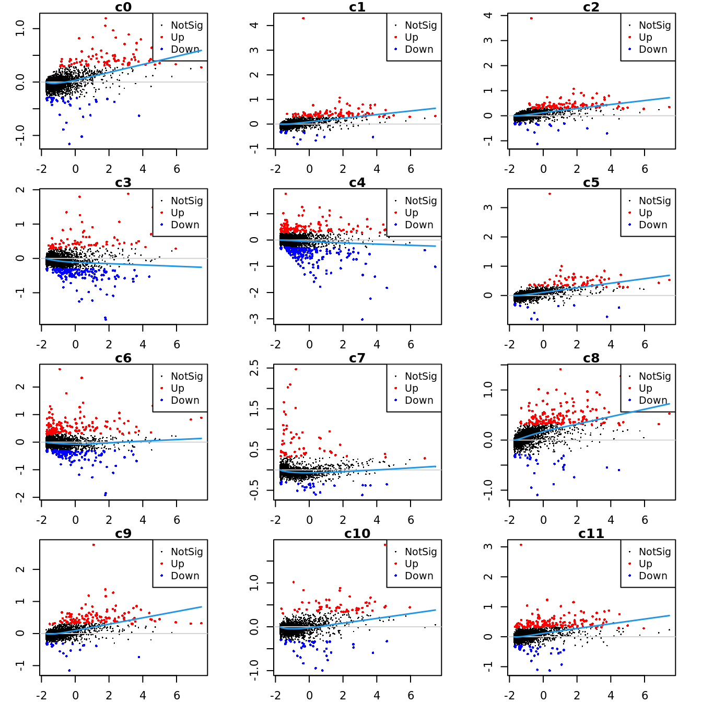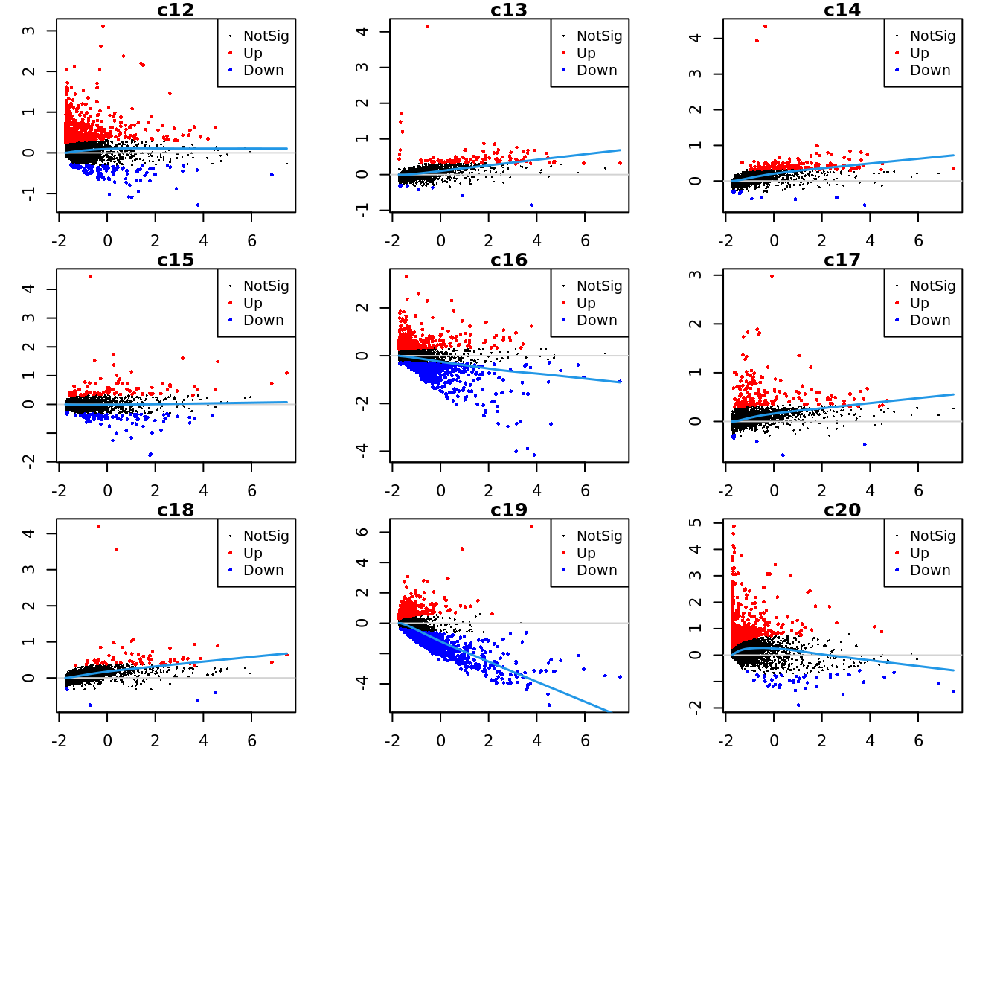
limma marker gene dotplot
DefaultAssay(seu) <- "RNA"
contnames <- colnames(mycont)
top_markers <- NULL
n_markers <- 10
for(i in 1:ncol(mycont)){
top <- topTreat(tr, coef = i, n = Inf)
top <- top[top$logFC > 0, ]
top_markers <- c(top_markers,
setNames(rownames(top)[1:n_markers],
rep(contnames[i], n_markers)))
}
top_markers <- top_markers[!is.na(top_markers)]
top_markers <- top_markers[!duplicated(top_markers)]
cols <- paletteer::paletteer_d("pals::glasbey")[factor(names(top_markers))]
DotPlot(seu,
features = unname(top_markers),
group.by = grp,
cols = c("azure1", "blueviolet"),
dot.scale = 3, assay = "SCT") +
RotatedAxis() +
FontSize(y.text = 8, x.text = 12) +
labs(y = element_blank(), x = element_blank()) +
coord_flip() +
theme(axis.text.y = element_text(color = cols)) +
ggtitle("Top 10 cluster marker genes (no duplicates)")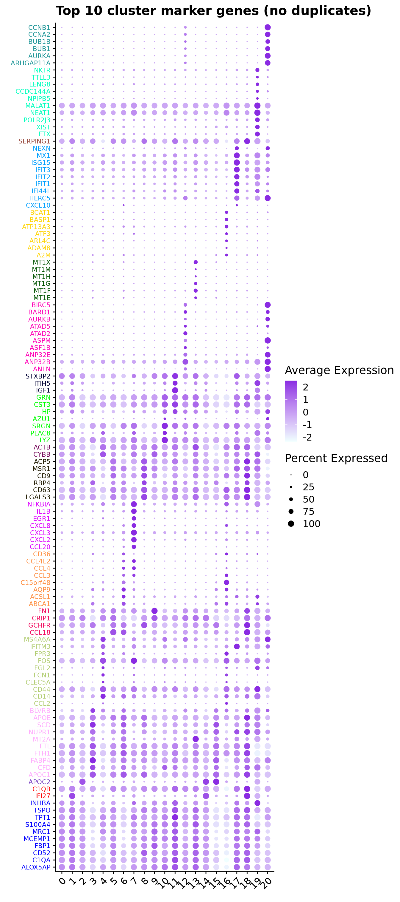
Save marker genes and pathways
The Broad MSigDB Reactome pathways are tested for each contrast using
cameraPR from limma. The cameraPR
method tests whether a set of genes is highly ranked relative to other
genes in terms of differential expression, accounting for inter-gene
correlation.
Prepare gene sets of interest.
if(!file.exists(here("data/Hs.c2.cp.reactome.v7.1.entrez.rds")))
download.file("https://bioinf.wehi.edu.au/MSigDB/v7.1/Hs.c2.cp.reactome.v7.1.entrez.rds",
here("data/Hs.c2.cp.reactome.v7.1.entrez.rds"))
Hs.c2.reactome <- readRDS(here("data/Hs.c2.cp.reactome.v7.1.entrez.rds"))
gns <- AnnotationDbi::mapIds(org.Hs.eg.db,
keys = rownames(tr),
column = c("ENTREZID"),
keytype = "SYMBOL",
multiVals = "first")Run pathway analysis and save results to file.
options(scipen=-1, digits = 6)
contnames <- colnames(mycont)
dirName <- here("output",
"cluster_markers",
glue("RNA{ambient}"),
"macrophages")
if(!dir.exists(dirName)) dir.create(dirName, recursive = TRUE)
for(c in colnames(tr)){
top <- topTreat(tr, coef = c, n = Inf)
top <- top[top$logFC > 0, ]
write.csv(top[1:100, ] %>%
rownames_to_column(var = "Symbol"),
file = glue("{dirName}/up-cluster-limma-{c}.csv"),
sep = ",",
quote = FALSE,
col.names = NA,
row.names = TRUE)
# get marker indices
c2.id <- ids2indices(Hs.c2.reactome, unname(gns[rownames(tr)]))
# gene set testing results
cameraPR(tr$t[,glue("{c}")], c2.id) %>%
rownames_to_column(var = "Pathway") %>%
dplyr::filter(Direction == "Up") %>%
slice_head(n = 50) %>%
write.csv(file = here(glue("{dirName}/REACTOME-cluster-limma-{c}.csv")),
sep = ",",
quote = FALSE,
col.names = NA,
row.names = TRUE)
}ADT marker analysis
Find all marker ADT using limma
# identify isotype controls for DSB ADT normalisation
read_csv(file = here("data",
"C133_Neeland_batch1",
"data",
"sample_sheets",
"ADT_features.csv")) %>%
dplyr::filter(grepl("[Ii]sotype", name)) %>%
pull(name) -> isotype_controls
seuSub <- subset(seu, cells = which(seu$Batch != 0))
# normalise ADT using DSB normalisation
adt <- seuSub[["ADT"]]@counts
adt_dsb <- ModelNegativeADTnorm(cell_protein_matrix = adt,
denoise.counts = TRUE,
use.isotype.control = TRUE,
isotype.control.name.vec = isotype_controls)[1] "fitting models to each cell for dsb technical component and removing cell to cell technical noise"Running the limma analysis on the normalised counts.
# limma-trend for DE
Idents(seuSub) <- grp
logcounts <- adt_dsb
# remove isotype controls from marker analysis
logcounts <- logcounts[!rownames(logcounts) %in% isotype_controls,]
maxclust <- length(levels(Idents(seuSub))) - 1
clustgrp <- paste0("c", Idents(seuSub))
clustgrp <- factor(clustgrp, levels = paste0("c", 0:maxclust))
donor <- seuSub$sample.id
design <- model.matrix(~ 0 + clustgrp + donor)
colnames(design)[1:(length(levels(clustgrp)))] <- levels(clustgrp)
# Create contrast matrix
mycont <- matrix(NA, ncol = length(levels(clustgrp)),
nrow = length(levels(clustgrp)))
rownames(mycont) <- colnames(mycont) <- levels(clustgrp)
diag(mycont) <- 1
mycont[upper.tri(mycont)] <- -1/(length(levels(factor(clustgrp))) - 1)
mycont[lower.tri(mycont)] <- -1/(length(levels(factor(clustgrp))) - 1)
# Fill out remaining rows with 0s
zero.rows <- matrix(0, ncol = length(levels(clustgrp)),
nrow = (ncol(design) - length(levels(clustgrp))))
fullcont <- rbind(mycont, zero.rows)
rownames(fullcont) <- colnames(design)
fit <- lmFit(logcounts, design)
fit.cont <- contrasts.fit(fit, contrasts = fullcont)
fit.cont <- eBayes(fit.cont, trend = TRUE, robust = TRUE)
summary(decideTests(fit.cont)) c0 c1 c2 c3 c4 c5 c6 c7 c8 c9 c10 c11 c12 c13 c14 c15 c16 c17
Down 63 32 44 47 54 24 28 33 46 36 44 44 21 24 28 32 55 19
NotSig 67 81 69 72 18 83 75 103 76 72 88 73 81 98 82 79 13 107
Up 24 41 41 35 82 47 51 18 32 46 22 37 52 32 44 43 86 28
c18 c19 c20
Down 18 56 1
NotSig 81 85 125
Up 55 13 28Test relative to a threshold (TREAT).
tr <- treat(fit.cont, lfc = 0.1)
dt <- decideTests(tr)
summary(dt) c0 c1 c2 c3 c4 c5 c6 c7 c8 c9 c10 c11 c12 c13 c14 c15 c16 c17
Down 3 2 2 11 37 0 6 2 4 1 8 4 0 1 2 7 40 0
NotSig 148 147 147 132 108 144 132 151 139 141 144 137 128 152 147 130 100 154
Up 3 5 5 11 9 10 16 1 11 12 2 13 26 1 5 17 14 0
c18 c19 c20
Down 0 48 0
NotSig 130 106 135
Up 24 0 19ADT marker dot plot
Dot plot of the top 5 ADT markers per cluster without duplication.
contnames <- colnames(mycont)
top_markers <- NULL
n_markers <- 5
for (i in 1:length(contnames)){
top <- topTreat(tr, coef = i, n = Inf)
top <- top[top$logFC > 0,]
top_markers <- c(top_markers,
setNames(rownames(top)[1:n_markers],
rep(contnames[i], n_markers)))
}
top_markers <- top_markers[!is.na(top_markers)]
top_markers <- top_markers[!duplicated(top_markers)]
cols <- paletteer::paletteer_d("pals::glasbey")[factor(names(top_markers))][!duplicated(top_markers)]
# add DSB normalised data to Seurat assay for plotting
seuSub[["ADT.dsb"]] <- CreateAssayObject(data = logcounts)
DotPlot(seuSub,
group.by = grp,
features = unname(top_markers),
cols = c("azure1", "blueviolet"),
assay = "ADT.dsb") +
RotatedAxis() +
FontSize(y.text = 8, x.text = 9) +
labs(y = element_blank(), x = element_blank()) +
theme(axis.text.y = element_text(color = cols),
legend.text = element_text(size = 10),
legend.title = element_text(size = 10)) +
coord_flip() +
ggtitle("Top 5 cluster markers ADTs (no duplicates)")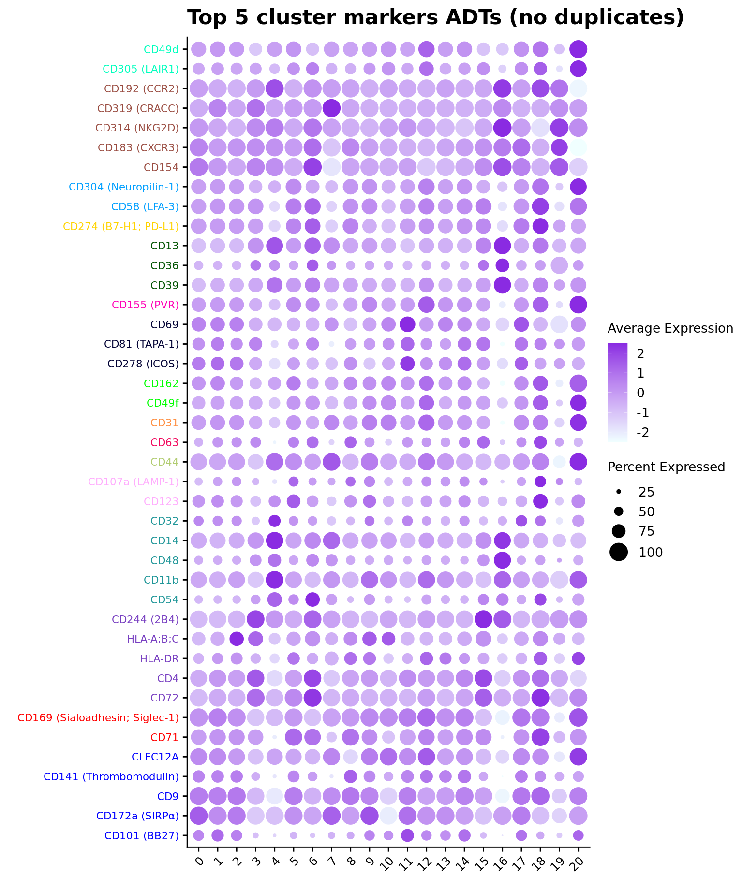
ADT marker heatmap
Make data frame of proteins, clusters, expression levels.
cbind(seuSub@meta.data %>%
dplyr::select(!!sym(grp)),
as.data.frame(t(seuSub@assays$ADT.dsb@data))) %>%
rownames_to_column(var = "cell") %>%
pivot_longer(c(-!!sym(grp), -cell),
names_to = "ADT",
values_to = "expression") %>%
dplyr::group_by(!!sym(grp), ADT) %>%
dplyr::summarize(Expression = mean(expression)) %>%
ungroup() -> dat
# plot expression density to select heatmap colour scale range
plot(density(dat$Expression))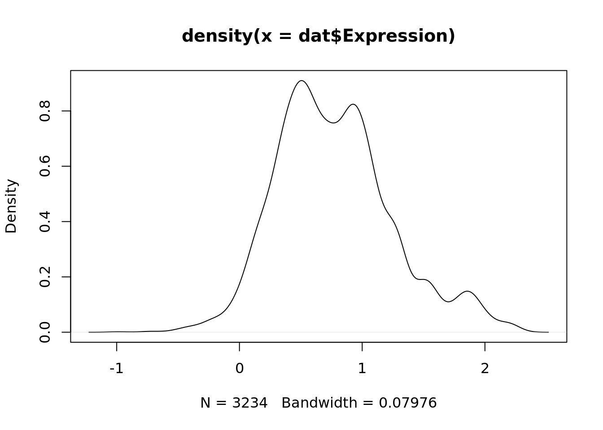
dat %>%
dplyr::filter(ADT %in% top_markers) |>
heatmap(
.column = !!sym(grp),
.row = ADT,
.value = Expression,
row_order = top_markers,
scale = "none",
rect_gp = grid::gpar(col = "white", lwd = 1),
show_row_names = TRUE,
cluster_columns = FALSE,
cluster_rows = FALSE,
column_names_gp = grid::gpar(fontsize = 10),
column_title_gp = grid::gpar(fontsize = 12),
row_names_gp = grid::gpar(fontsize = 8, col = cols[order(top_markers)]),
row_title_gp = grid::gpar(fontsize = 12),
column_title_side = "top",
palette_value = circlize::colorRamp2(seq(-0.25, 2, length.out = 256),
viridis::magma(256)),
heatmap_legend_param = list(direction = "vertical"))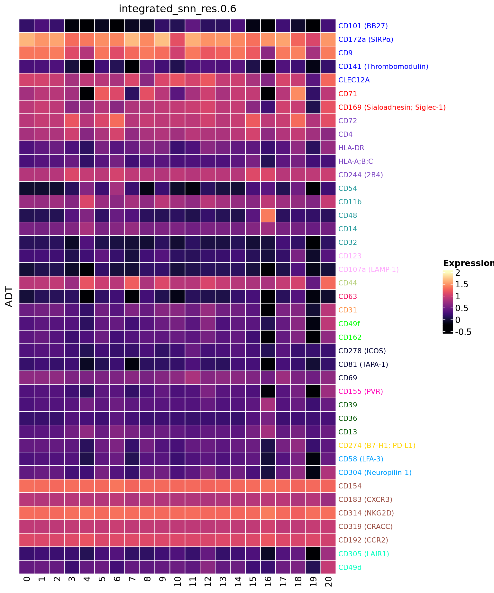
Save ADT markers
options(scipen=-1, digits = 6)
contnames <- colnames(mycont)
dirName <- here("output",
"cluster_markers",
glue("ADT{ambient}"),
"macrophages")
if(!dir.exists(dirName)) dir.create(dirName, recursive = TRUE)
for(c in contnames){
top <- topTreat(tr, coef = c, n = Inf)
top <- top[top$logFC > 0, ]
write.csv(top,
file = glue("{dirName}/up-cluster-limma-{c}.csv"),
sep = ",",
quote = FALSE,
col.names = NA,
row.names = TRUE)
}Session info
sessionInfo()R version 4.3.3 (2024-02-29)
Platform: x86_64-pc-linux-gnu (64-bit)
Running under: Ubuntu 22.04.1 LTS
Matrix products: default
BLAS: /usr/lib/x86_64-linux-gnu/openblas-pthread/libblas.so.3
LAPACK: /usr/lib/x86_64-linux-gnu/openblas-pthread/libopenblasp-r0.3.20.so; LAPACK version 3.10.0
locale:
[1] LC_CTYPE=en_AU.UTF-8 LC_NUMERIC=C
[3] LC_TIME=en_AU.UTF-8 LC_COLLATE=en_AU.UTF-8
[5] LC_MONETARY=en_AU.UTF-8 LC_MESSAGES=en_AU.UTF-8
[7] LC_PAPER=en_AU.UTF-8 LC_NAME=C
[9] LC_ADDRESS=C LC_TELEPHONE=C
[11] LC_MEASUREMENT=en_AU.UTF-8 LC_IDENTIFICATION=C
time zone: Etc/UTC
tzcode source: system (glibc)
attached base packages:
[1] stats4 stats graphics grDevices datasets utils methods
[8] base
other attached packages:
[1] dsb_1.0.3 tidyHeatmap_1.8.1
[3] speckle_1.2.0 glue_1.7.0
[5] org.Hs.eg.db_3.18.0 AnnotationDbi_1.64.1
[7] patchwork_1.2.0 clustree_0.5.1
[9] ggraph_2.2.0 here_1.0.1
[11] dittoSeq_1.14.2 glmGamPoi_1.14.3
[13] SeuratObject_4.1.4 Seurat_4.4.0
[15] lubridate_1.9.3 forcats_1.0.0
[17] stringr_1.5.1 dplyr_1.1.4
[19] purrr_1.0.2 readr_2.1.5
[21] tidyr_1.3.1 tibble_3.2.1
[23] ggplot2_3.5.0 tidyverse_2.0.0
[25] edgeR_4.0.15 limma_3.58.1
[27] SingleCellExperiment_1.24.0 SummarizedExperiment_1.32.0
[29] Biobase_2.62.0 GenomicRanges_1.54.1
[31] GenomeInfoDb_1.38.6 IRanges_2.36.0
[33] S4Vectors_0.40.2 BiocGenerics_0.48.1
[35] MatrixGenerics_1.14.0 matrixStats_1.2.0
[37] workflowr_1.7.1
loaded via a namespace (and not attached):
[1] fs_1.6.3 spatstat.sparse_3.0-3 bitops_1.0-7
[4] httr_1.4.7 RColorBrewer_1.1-3 doParallel_1.0.17
[7] backports_1.4.1 tools_4.3.3 sctransform_0.4.1
[10] utf8_1.2.4 R6_2.5.1 lazyeval_0.2.2
[13] uwot_0.1.16 GetoptLong_1.0.5 withr_3.0.0
[16] sp_2.1-3 gridExtra_2.3 progressr_0.14.0
[19] cli_3.6.2 Cairo_1.6-2 spatstat.explore_3.2-6
[22] prismatic_1.1.1 labeling_0.4.3 sass_0.4.8
[25] spatstat.data_3.0-4 ggridges_0.5.6 pbapply_1.7-2
[28] parallelly_1.37.0 rstudioapi_0.15.0 RSQLite_2.3.5
[31] generics_0.1.3 shape_1.4.6 vroom_1.6.5
[34] ica_1.0-3 spatstat.random_3.2-2 dendextend_1.17.1
[37] Matrix_1.6-5 ggbeeswarm_0.7.2 fansi_1.0.6
[40] abind_1.4-5 lifecycle_1.0.4 whisker_0.4.1
[43] yaml_2.3.8 SparseArray_1.2.4 Rtsne_0.17
[46] paletteer_1.6.0 grid_4.3.3 blob_1.2.4
[49] promises_1.2.1 crayon_1.5.2 miniUI_0.1.1.1
[52] lattice_0.22-5 cowplot_1.1.3 KEGGREST_1.42.0
[55] pillar_1.9.0 knitr_1.45 ComplexHeatmap_2.18.0
[58] rjson_0.2.21 future.apply_1.11.1 codetools_0.2-19
[61] leiden_0.4.3.1 getPass_0.2-4 data.table_1.15.0
[64] vctrs_0.6.5 png_0.1-8 gtable_0.3.4
[67] rematch2_2.1.2 cachem_1.0.8 xfun_0.42
[70] S4Arrays_1.2.0 mime_0.12 tidygraph_1.3.1
[73] survival_3.5-8 pheatmap_1.0.12 iterators_1.0.14
[76] statmod_1.5.0 ellipsis_0.3.2 fitdistrplus_1.1-11
[79] ROCR_1.0-11 nlme_3.1-164 bit64_4.0.5
[82] RcppAnnoy_0.0.22 rprojroot_2.0.4 bslib_0.6.1
[85] irlba_2.3.5.1 vipor_0.4.7 KernSmooth_2.23-22
[88] colorspace_2.1-0 DBI_1.2.1 ggrastr_1.0.2
[91] tidyselect_1.2.0 processx_3.8.3 bit_4.0.5
[94] compiler_4.3.3 git2r_0.33.0 DelayedArray_0.28.0
[97] plotly_4.10.4 checkmate_2.3.1 scales_1.3.0
[100] lmtest_0.9-40 callr_3.7.3 digest_0.6.34
[103] goftest_1.2-3 spatstat.utils_3.0-4 rmarkdown_2.25
[106] XVector_0.42.0 htmltools_0.5.7 pkgconfig_2.0.3
[109] highr_0.10 fastmap_1.1.1 rlang_1.1.3
[112] GlobalOptions_0.1.2 htmlwidgets_1.6.4 shiny_1.8.0
[115] farver_2.1.1 jquerylib_0.1.4 zoo_1.8-12
[118] jsonlite_1.8.8 mclust_6.1 RCurl_1.98-1.14
[121] magrittr_2.0.3 GenomeInfoDbData_1.2.11 munsell_0.5.0
[124] Rcpp_1.0.12 viridis_0.6.5 reticulate_1.35.0
[127] stringi_1.8.3 zlibbioc_1.48.0 MASS_7.3-60.0.1
[130] plyr_1.8.9 parallel_4.3.3 listenv_0.9.1
[133] ggrepel_0.9.5 deldir_2.0-2 Biostrings_2.70.2
[136] graphlayouts_1.1.0 splines_4.3.3 tensor_1.5
[139] hms_1.1.3 circlize_0.4.15 locfit_1.5-9.8
[142] ps_1.7.6 igraph_2.0.1.1 spatstat.geom_3.2-8
[145] reshape2_1.4.4 evaluate_0.23 renv_1.0.3
[148] BiocManager_1.30.22 tzdb_0.4.0 foreach_1.5.2
[151] tweenr_2.0.3 httpuv_1.6.14 RANN_2.6.1
[154] polyclip_1.10-6 future_1.33.1 clue_0.3-65
[157] scattermore_1.2 ggforce_0.4.2 xtable_1.8-4
[160] later_1.3.2 viridisLite_0.4.2 beeswarm_0.4.0
[163] memoise_2.0.1 cluster_2.1.6 timechange_0.3.0
[166] globals_0.16.2